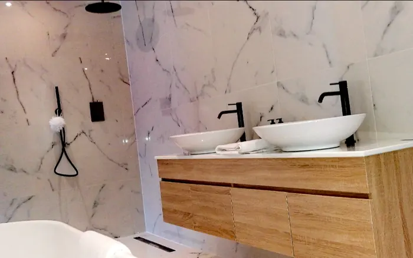
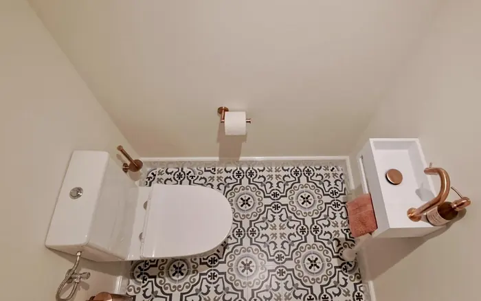
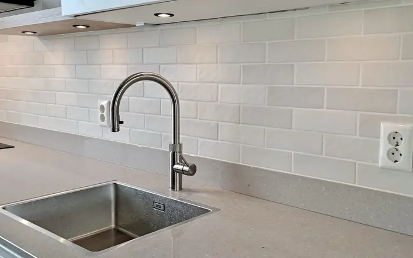
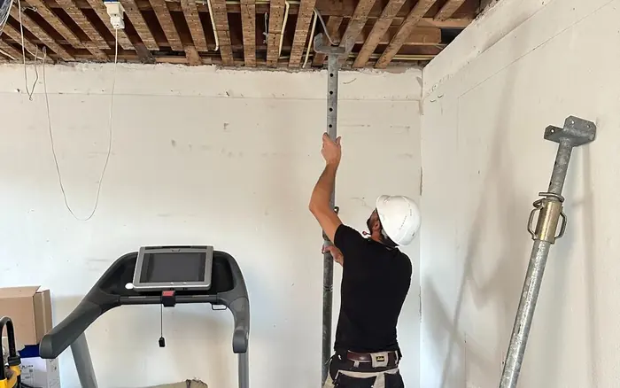
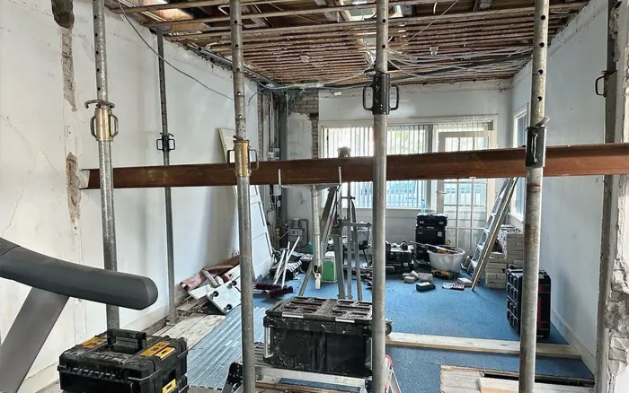
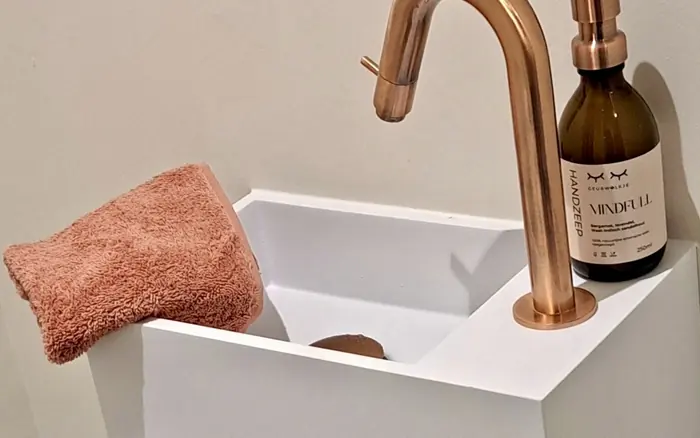

Badkamerrenovatie
De complete renovatie, van advies tot oplevering. U heeft nergens omkijken naar.
- Sloopwerk en wanden plaatsen
- Elektra verplaatsen, leidingen verleggen
- Badmeubel en wanden op maat
- Advies over styling, sanitair en tegels
Home / Diensten
Zes diensten, van een nieuwe badkamer tot een draagmuur eruit.
Complete renovaties van badkamers, toiletten, woningen en bedrijfsruimtes, groot of klein. Wij adviseren u over de styling, het sanitair, de tegels en de indeling van de ruimte.

De complete renovatie, van advies tot oplevering. U heeft nergens omkijken naar.

De complete toiletrenovatie: sloopwerk, tegelen en alles op maat. Ook een nieuwe, losse toiletruimte.

Alle soorten tegels: natuursteen, mozaïek, keramisch. Voor de badkamer, het toilet en de keukenwand.

Woningen en bedrijfsruimtes, groot of klein. Op basis van uw wensen en budget komt er een planning, en Axel ontzorgt u tijdens de hele verbouwing.

Axel is gespecialiseerd in het renoveren van oude panden, voor particulieren en bedrijven.

Ook voor een klus die kleiner is. Klanten noemen onder meer tegels herstellen na een lekkage en het verleggen van de aan- en afvoer van een vaatwasser.
Stuur een korte omschrijving en een paar foto's. Axel neemt zo snel mogelijk contact met u op.